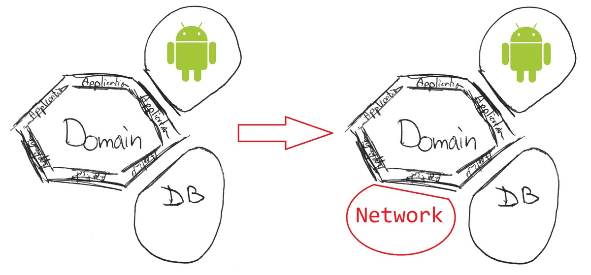
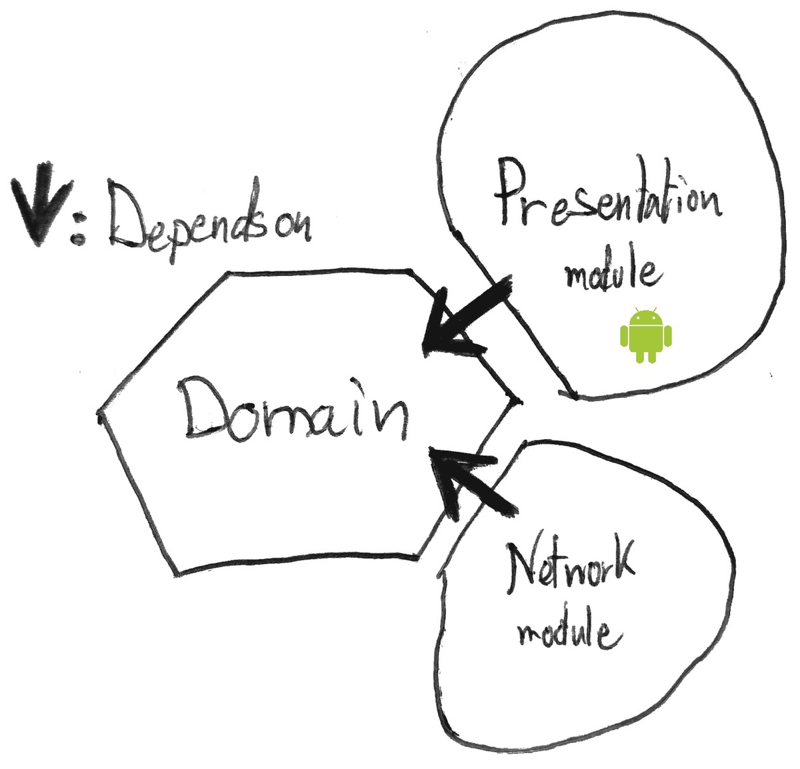
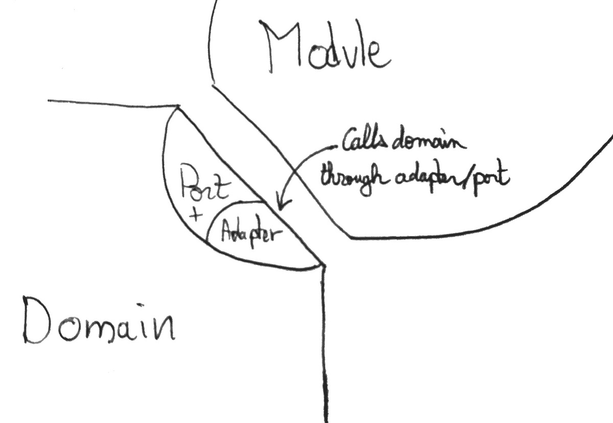
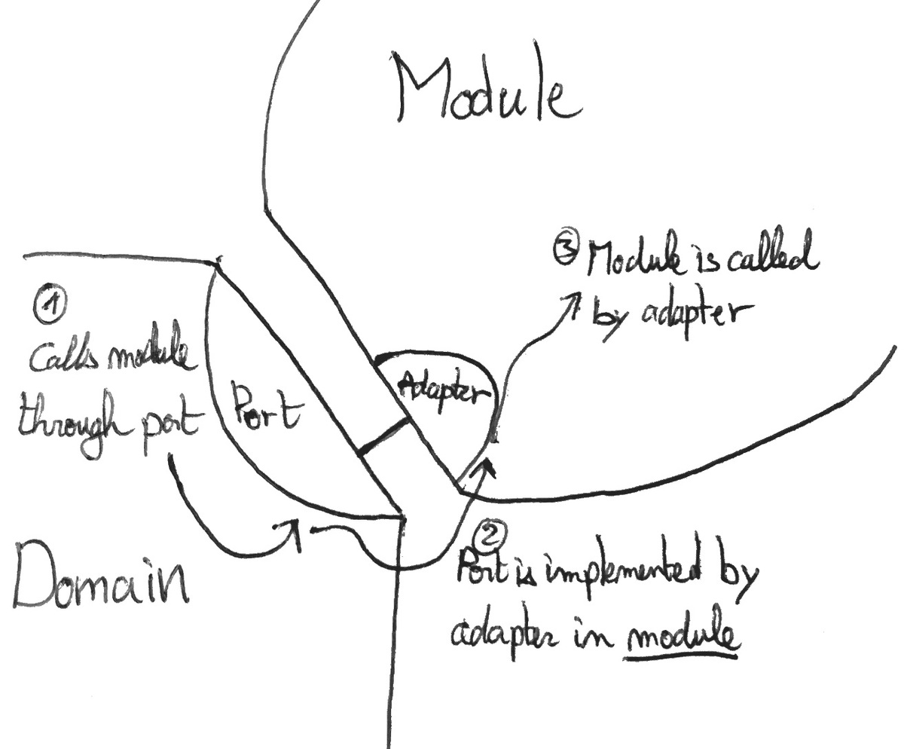

Hexagonal Android - Part 2: The Architecture
5 min read - May 15nd, 2016
Update
After month of research, study and trial and error, I finally have a much clearer vision on modular architectures. I invite you to discover the result of my research in the following article:
Feel free to continue reading this article, as it goes a bit more in-depth on certain aspects.
I used a slightly different, more refined vocabulary in the article about My Java Archetype. To make the transitions as easy as possible between the two articles, here are the equivalent definitions.
Hexagonal Series My Java Archetype Use-case Application Service Driving Adapter Application Service Port Contract (Interface layer) Driven Adatper Contract Implementation
Today I will talk more in detail about the Hexagonal architecture and more specifically how it has been implemented in the application.
The main idea as presented in the previous post is to get rid of all dependencies in the domain.
Well, that’s more of a side effect really. The real idea is to have a flow of dependencies pointing inward: from the Modules to the Domain, but we’ll come to that later.
For now, all we want is a domain free of Android dependencies.
This post is part of a series of post where I try my best at implementing the Hexagonal Architecture in an Android application.
You can also check out the other parts:
The whole code for the application is available at:
This series is not meant to be a complete introduction to the Hexagonal architecture, for more information check these links :
- Alistair Cockburn’s original Hexagonal Architecture
- Fideloper’s talk on Hexagonal Architecture
- Uncle Bob’s Clean architecture
Moreover this project is very similar to the one of Fernando Cejas
##Domain
With a domain java only testing is a breeze.
But then, what should we put in the domain really ?
Well, anything that supports the logic of the application.
-
Does your app need to process invoices? The processing logic goes in the domain.
-
Need to extract information from a list of … things? That goes in the domain.
-
Need to fetch this list from a JSON API?
That goes in the domainWait a sec, that does NOT go in the Domain. I’ll talk about that later.
The domain contains all the business logic necessary to your app. But is free of any dependencies, android or other.
####What does not belong in the Domain
But now, what if we want to fetch a list of objects from say a JSON API.
Let’s face it a lot of android applications are wrappers to provide a nice UX through a Restful API.
In this case, we wouldn’t really want to get rid of all the dependencies and do the all the HTTP connections and JSON processing by hand. That seems to go really hard against the don’t reinvent the wheel principle.
#####The Problem
Fetching JSON is definitely better done when relying on some 3rd party library for parsing the result from the API, same goes for connecting to a server.
Yet the domain should be free of dependencies: Android, other frameworks, and libraries. Also, network operations are definitely not part of the UI.
######Where to put this Network module?
Well, did I say “module” ?
Well, I think we’ve got our answer! The network module will be added as an extra module to our Hexagonal architecture.

The domain is still the centerpiece of the application.
If the network module is completely separated from the domain, and the android application part is also a different module: How to access network data from the Android Application?
Through the domain of course!
##Boundaries
The domain should present an API to be used by different modules.
When the UI needs some information from the network :
-
The UI module call the API of the domain
-
The domain will then call the network.
-
The domain dispatch the information to the UI
Simple enough? Well, so I thought.
But there’s a trick, as mentioned in the introduction an Android free domain is actually just a side effect, what we really want is a flow of dependencies pointing inward.

Following this model, there is a problem with the previous statement. How does the domain call the network or dispatch the information to the UI, if the domain not supposed to have any knowledge of the external modules?
###Ports and Adapters
The Hexagonal architecture is called the Port and adapters architecture for a reason.
For each module, communication with the domain is done through a port and one, or multiple adapters.
A port basically is what I called a module throughout this entire article. It is not necessarily a code entity, but rather the definition of a point of standardized interaction with the domain. A single port could be represented by one or a series of Java interfaces for example.
An adapter, is an implementation of a port.
When the UI needs to communicate with the domain, for example, it’ll do so through a port: An interface defined in the domain API that’s implemented by an adapter in the domain. That is called a driving adapter, and is the most obvious way to communicate with the domain.

Now how can the domain call the network and dispatch the information to the UI since it should not have any dependency on these elements? Turns out there is another type of adapter, called a driven adapter that allows the domain to do just that! Is is an interface that is defined in the domain but implemented in a module. Then at runtime, an implementation of this interface is injected in domain objects. Of course, the domain objects interact only with the interface, and not the actual implementation.

Of course, there can be multiple driven adapter for a single port. And that’s also the beauty of it. This allows to easily swap components of the system. Need a mock representation of the network module for testing? That’s just one adapter away.
######An example
If you application requires a list of prices from an API then do the sum and display it :
- User click on load sum
- UI calls domain through a driving adapter to get the sum.
- Domain calls network through a driven adapter (provided in constructor)
- Domain perform the sum
- Domain calls/notify the UI through a driven adapter
- UI display sum
##Conclusion
To summarize, the domain contains all the logic of the application. It only handles business-related concerns and is free of any dependencies. It is used by/uses modules that depend on the domain. The communication between the modules and the domain is established through ports. The implementation of ports are adapters.
Doing the research for this article I learned 3 things :
- What the domain roughly consist of
- How is the domain used by the modules
- How the domain uses the modules
In the next article of this series I will focus on: Crossing the boundaries what should cross the boundaries between layers, and how to organize the domain API to make its integration as seamless as possible. I’ll also talk about the Application layer which I didn’t mention in this article.
If you have any comments or questions, I would love to see your reactions in the section below. The first one to learn from this blog is me, and I’m learning from you. So the more comment the better my future articles will be.
— The Professional Beginner